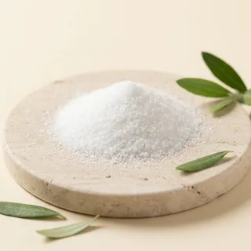

01
L-Karnitin
1.000 mg – Sabah saşesi
L-Karnitin nedir?
L-Karnitin, vücutta doğal olarak sentezlenebilen ve enerji metabolizmasında görev alan bir bileşiktir. Özellikle uzun zincirli yağ asitlerinin mitokondriye taşınmasında rol oynar. Bu süreç, yağ asitlerinin enerji üretiminde kullanılabilmesini sağlar.
Bilimsel literatürde nasıl incelenmiştir?
L-Karnitin üzerine yapılan araştırmalarda yağ asidi taşınması, enerji metabolizması, egzersiz performansı ve vücut ağırlığı üzerindeki olası etkiler değerlendirilmiştir.
LIVEXA'daki miktarı: Bir saşede 1.000 mg L-Karnitin bulunur. L-Karnitin tartarat formundan sağlanmaktadır.